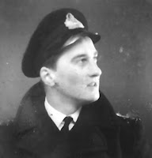
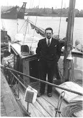
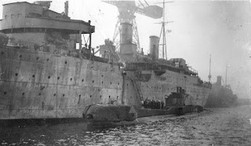

So there I was, rummaging in the attic, looking for something else entirely, when I discovered … (insert mystery item here).
{kind=link}
My trouvaille in the autumn of 2016 was a faded blue hardback folder holding thirty sheets of densely-typed paper with photographs every facing page and handwritten amendments.
THE CRUISE OF NAROMIS:
AUGUST IN THE BALTIC 1939
G.A. JONES
Oh gulp, I remembered what this must be... Years ago my father, George Jones, had begun telling my brothers and me about his trip through the Kiel Canal, aged 21, in the weeks immediately before the Second World War. I also remembered my total failure to feel interested and felt ashamed. I was probably reading Leon Uris’s Exodus at that time or watching The Great Escape. When I realised there were no heroics or atrocities in Dad’s story I simply stopped listening. I assume he stopped telling us.
Naromis was a 37’ motor yacht built on the Norfolk Broads and owned by R.J Clutton, a banker with Schroders. In the last weeks of August 1939 she set off across the Channel, up the Dutch coast, though the Kiel Canal into the Baltic. There Clutton was told he could buy no more diesel in Germany. They were escorted out of German waters and came home by the long route via Scandinavia. My father had already been accepted by the RNVR (Royal Naval Volunteer Reserve) and his call-up papers were waiting for him. He spent one night at home before leaving for a submarine depot ship at Rosyth.
{kind=link}
In the twenty-nine years that I knew my father I cannot remember more than two or three occasions when he talked about his war service. Perhaps I closed my ears to that as well? Dad had bad eyesight: he was a “pusser” (paymaster). He hadn’t been a prisoner of war or an RAF navigator or evacuated from Dunkirk like Mum’s brothers; or endured the V2 bombings as she had - or commanded a motor launch and been seriously wounded in the Dieppe Raid like his own, more dashing, RNVR brother. He had merely given six years of his life from the autumn of 1939 to the late spring of 1946, working conscientiously to the best of his ability and always offering more than had been asked.
There had, however, been a brief period when he’d been less than fully occupied and when he’d considered this peace-time expedition sufficiently interesting to record. He’d wondered about publication and had written to a sympathetic editor at the Yachting Monthly. But then his ship had moved on. He was a junior administrator, a cipher officer, the Captain’s secretary – he was always busy. By the time he was finally released from service the world had changed. No one, for the next half century at least, would have wanted to read a young man’s account of three week's cruise on a motor yacht from which everyone returned home safely.
The climb back over all those boxes was unappealing. I settled myself in the corner of the attic and opened Dad’s book:
“Friday 11th August 1939 The Stock Exchange was just about closing for the weekend that Friday afternoon in August as I turned down Walbrook towards Cannon Street Station. I must have been a strange sight with my yellow oilskins and red sea boots and many a respectable broker’s clerk must have felt mildly shaken. Yesterday I too had been a stockbroker’s clerk and had just completed my three year’s articles. Today I had put shares aside (for a few weeks, as I thought) and was off to help take a yacht to the Baltic…a yacht to the Baltic!”
“Friday 11th August 1939 The Stock Exchange was just about closing for the weekend that Friday afternoon in August as I turned down Walbrook towards Cannon Street Station. I must have been a strange sight with my yellow oilskins and red sea boots and many a respectable broker’s clerk must have felt mildly shaken. Yesterday I too had been a stockbroker’s clerk and had just completed my three year’s articles. Today I had put shares aside (for a few weeks, as I thought) and was off to help take a yacht to the Baltic…a yacht to the Baltic!”
 |
| Probationary temporary paymaster sub-lieutenant G.A. Jones RNVR |
I also wondered whether it was just because I am his daughter that I found myself so emotionally touched by the quality of his writing and the moments that he slipped away from the rest of the crew to visit a church or savour the magic of light on water? Dad was twenty-one when he joined Naromis; he’d never been abroad before. “Out in the harbour the black shapes of the boats stirred restlessly to the gentle swell that came in through the pier heads. Beyond all this was the sparkling anticipation of the morning to come.” There’s an anxious seriousness in this young man's book as well as plenty of beer-fuelled larking around. He knew that war was imminent and that he would, inevitably, be in it.
Later that night I told my partner Francis what I’d been doing. He was amazed that I’d never bothered to seek out the typescript before. Our son Bertie was at home, he’d been having his own coming-of-age summer. Neither of them had known my father and I started to suspect that my own knowledge was also somewhat limited. Over the next few days I began to search old leather suitcases. I found Dad’s 1939 dairy, his poetry and a large, well-filled envelope containing the records of his RNVR service. I also discovered, with some shock, that he’d sent sixty of his Naromis photographs to Naval Intelligence. I showed Francis the list: seamarks, bridges, shipyards. “What does this look like to you?” I asked. “It looks like spying,” he said at once.
 |
| R.J. Clutton, the skipper of Naromis (Grimsby Sept 2nd 1939) |
I checked his diary: August 1st 1939 “Crocker suggests I go to Danzig and pay 9 gns.” Danzig? Wasn’t that where…? Danzig was the Baltic port where the first shots of World War Two would be fired on September 1st. An odd place to chose for a holiday? Crocker, I later discovered was another RNVR volunteer, in contact with Naromis's RNVR navigator, Fuller, a barrister from the Middle Temple, who was the man who had directly contacted my father. By September 2nd Naromis had been abandoned in Grimsby and by the time war was declared on the following day Dad was in his RNVR uniform and on his way to support the submarines that would be patrolling the seas he had so recently left. “It felt,” he wrote later, “as if I had been conducted through the scene of a great drama and just managed to get off the stage before the curtain went up.”
That moment of discovery in the corner of the attic has sent me on an extended voyage through naval histories, memoirs, lists of ships, strategic objectives, deeds of derring-do and solid backroom persistence that has extended my knowledge of my father and the extraordinary time through which he lived.The crew of Naromis were not professional spies: they were volunteers taking a good look round. Both their voyage and my own have left me more convinced that ever of the truth of Dad's most characteristic saying: “time spent on reconnaissance is seldom wasted”.
 |
| HMS Forth, Dad's first posting |